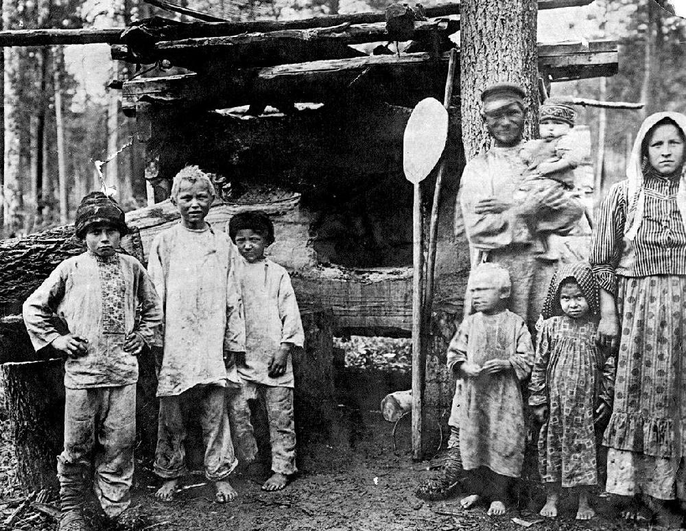
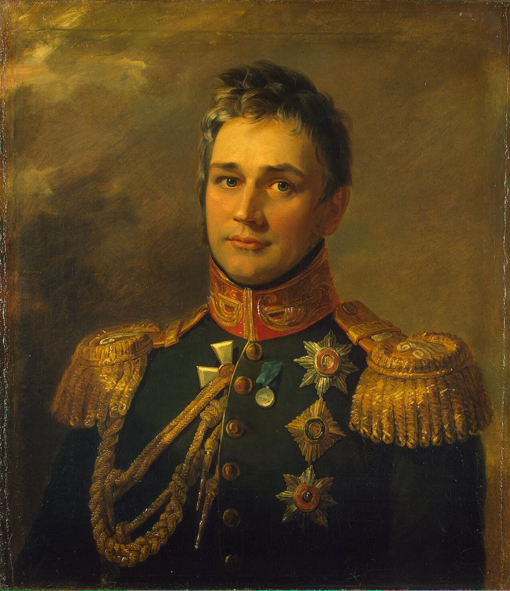
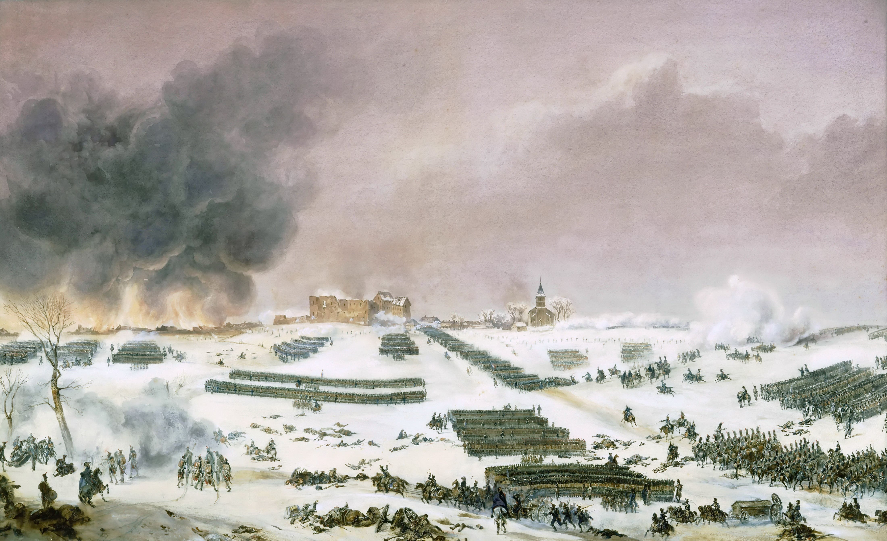

보로디노 에필로그 (3) - 쿠투조프, 러시아를 구원하다
게시: 2020-11-02T06:30:03+09:00
비아젬스키 대공의 기록에 따르면 러시아군 대부분이 전설 속의 영웅 나폴레옹을 상대로 잘 싸웠다고 스스로 우쭐해 있었다고 했습니다. 그리고 아마 젊은 장교들과 최전선에 서지 않았던 부대들의 병사들 상당수가 정말 그러했을 것입니다. 그러나 현실적으로 러시아군은 괴멸상태였습니다. 보로디노 전투에서 러시아군은 대략 3만8천에서 5만8천 정도의 손실을 입은 것으로 추정됩니다. 원래 병력을 12만으로 추정하고 약 4만5천의 병력이 전사나 부상으로 손실되었다고 가정하면 37.5%의 손실을 낸 셈입니다. 보통 당시 전투에서 승자의 손실률이 10%, 패자는 20%였던 것을 생각하면 끔찍한 참패였습니다. 나폴레옹 전쟁 당시 정말 일방적인 패배를 당했던 예나 전투와 아우어슈테트 전투에서 프로이센의 손실률은 각각 14%와 28%였습니다. 나폴레옹 전쟁은 시간이 갈 수록 점점 사상률이 높아지는 경향을 보이는데, 바로 직전의 대규모 전투이자 양측이 유례없이 높은 사상률을 냈던 바그람 전투에서 패배한 오스트리아의 손실률도 28%였습니다. 나폴레옹의 공식적 첫 패배인 아스페른-에슬링 전투에서 프랑스군은 약 35%의 손실을 냈습니다. 보통 부대가 전투에 참전했다가 몇 %의 전력 손실을 입으면 전멸이라고 표현하느냐에 대해서는 30%부터 80%까지 다양한 수치가 주장됩니다만, 전멸의 핵심은 얼마나 많은 병력을 상실했느냐 보다는 패배 뒤에도 단위 부대로서의 일체성과 기능성을 유지할 수 있느냐입니다. 예나 전투에서 프로이센군은 14%의 손실만을 입고도 사실상 궤멸되어 제대로 된 재집결 및 반격을 못하고 저 멀리 동프로이센까지 패주하기만 했습니다. 그에 비해 아스페른-에슬링 전투에서 35%의 손실률로 패배한 프랑스군은 질서있는 퇴각을 한 뒤 재집결하여 결국 바그람에서 승리를 얻어냈습니다. 전쟁은 승자에게나 패자에게나 가혹한 것인데, 특히 패배했을 경우 병사들을 규합해줄 정신적 이데올로기나 사명감, 도덕심 등이 없다면 비교적 작은 손실에도 부대가 궤멸될 수 있습니다. 나폴레옹이 황제가 되기 전 제1,2차 이탈리아 침공전 때의 오스트리아군이 그랬고, 예나-아우어슈테트에서의 프로이센군이 그랬습니다. 심지어 존 무어 경의 영국군 같은 경우는 아무런 전투 없이도 춥고 배고프다는 이유만으로도 후퇴길에 부대가 거의 와해되기 일보직전까지 몰렸지요. 그에 비해 혁명정신과 위대한 프랑스, 영광과 헌신 따위의 잡다한 교육을 나폴레옹이 정비한 학교 교육에서 받은데다 레종 도뇌르 등의 훈장과 진급이라는 당근으로 고무된 프랑스군 병사들은 아직 징집 연령이 되지도 않았으나 끌려나온 어린 병사들까지 패배를 비교적 잘 견뎌냈습니다. 러시아군은 어땠을까요 ? 대부분 농노 출신 문맹인데다 장교들로부터 가축 취급을 당했던 러시아군은 누가 봐도 프랑스군보다는 영국군 쪽에 가까운 군대였습니다. 그런 군대가 40%에 가까운 손실을 입었으니 붕괴되지 않는다면 정말 희한한 일이었을 것입니다. 진짜 제대로 된 지휘관은 이런 상황에서도 군을 추스리고 규합할 수 있어야 합니다. 그런데 쿠투조프가 바로 그 어려운 일을 해닙니다.

(가난한 러시아 농노의 모습입니다. 짜르 알렉산드르 2세가 농노 해방령을 선언하던 1861년 경의 사진입니다.) 쿠투조프는 처음부터 나폴레옹과 보로디노에서 이판사판 끝장을 볼 생각이 없었습니다. 물론 싸웠는데 어쩌다보니 대승을 거두면 정말 좋은 일이겠으나, 그렇게 운수대통을 바라는 것이 Plan A가 되어서는 안 되겠지요. 그렇다고 이건 무의미한 전투이니 싸우지 않고 후퇴하겠다는 전법도 쓸 수 없었습니다. 바로 전임자인 바클레이가 그러다가 쫓겨난 것이었으니까요. 좋든 싫든 득이 되든 실이 되든 쿠투조프는 싸워야 했습니다. 그리고 이제 보로디노에서 정말 피가 튀기게 한판 거하게 싸웠으니 쿠투조프는 당당히(?) 후퇴할 수 있었습니다. 그런데 후퇴를 해야지 패주를 해서는 곤란했는데, 이때 상황은 러시아군이 극심한 피해로 인해 붕괴 일보 직전이었습니다. 병력의 40% 정도를 잃은 것 자체도 큰 문제였습니다만, 상실한 병력 대부분이 정예 부대라는 것이 더욱 큰 문제였습니다. 나폴레옹의 그랑다르메도 온갖 어중이떠중이를 긁어모아 급조한 군대였지만, 러시아군도 원래의 정규군에 농민병들과 코사크 기병 등 오합지졸 비정규군을 잔뜩 섞어넣은 군대였습니다. 그런데 이번 전투에서 희생된 것은 대부분 제1선 정예부대였고 장교들 중에서도 고위 장교들이 많았습니다. 가령 원래 1,300명 수준이던 쉬르반스크(Shirvansk) 연대의 경우 9월 8일 새벽 3시에 인원 점검을 해보니 사병 96명에 위관급 장교 3명만 남아 있었습니다. 보론초프(Vorontsov) 장군이 지휘하던 사단의 경우 전투 개시는 4천명의 사병과 18명의 영관급 장교로 시작했는데, 전투 후 인원 점검 때는 사병 3백명이, 영관급 장교 중에서는 3명만 남아 있었습니다. 네베로프스키(Neverovsky) 사단은 700명이 남았고, 제50 야거(Jaeger, 엽병) 연대는 40명의 소대급 병력으로 줄어들었습니다. 오데사(Odessa) 연대에 남은 최고위 장교는 중위였고, 타르노폴(Tarnopol) 연대에는 장교가 모두 전멸하여 주임상사(Sergeant Major)가 최고위 지휘관으로 남아있어습니다.

(보론초프(Mikhail Semyonovich Vorontsov) 대공입니다. 그는 상트 페체르부르그의 백작 가문에서 태어난 귀족으로서 보로디노 전투 당시 30세에 불과했으나 이미 사단장이었습니다. 그런 그도 보로디노 전투에서 부상을 입었습니다. 적어도 당시의 귀족들은 전쟁터의 위험에서 몸을 사리는 것을 수치로 여겼습니다.) 이렇게 정예부대와 고위 장교들의 피해가 극심했던 것은 쿠투조프의 기본적인 방어선 배치가 종심을 두껍게 하는 것이었기 때문이었습니다. 프랑스군이 러시아군의 1차 방어선을 뚫고나면 불과 수백 미터 뒤편에 제2, 제3의 방어부대가 진을 치고 기다리고 있었습니다. 벗겨도 벗겨도 끝이 없는 이 전술 덕분에 결국 프랑스군은 러시아 방어선을 돌파하지 못했고, 그 때문에 러시아군은 아우스테를리츠나 프리틀란트 전투에서처럼 패주하지 않고 버틸 수 있었습니다. 그러나 이렇게 방어선 바로 뒤 쪽에 제2, 제3 방어선을 두껍게 배치해두는 전술은 프랑스군의 포병대에게 최적의 타겟을 제공했습니다. 제1 방어선을 때린 포탄들이 굳이 노리지 않아도 단단한 러시아의 평원을 퉁퉁 튀어 그 뒤의 예비 병력들을 덮쳤던 것입니다. 이러다보니 필요 이상으로 많은 병력이 피해를 입었고, 최전선에 서지도 않았던 고위 장교들도 숱하게 쓰러졌던 것입니다. 이와 관련하여, 뷔르템베르크의 오이겐 대공은 자기 휘하의 한 예비 여단은 전투가 시작된지 30분 만에 아무 전투를 벌이지 않고 그냥 제자리에 서있었음에도 불구하고 무려 10%의 병력을 잃었다고 기록했습니다.

(이건 1807년 아일라우 전투 때의 그림입니다. 저렇게 대오를 짠 보병 병력이 겹겹이 서있으면 라운드샷 한방에 줄줄이 희생자가 나기 마련입니다. 그러나 병사들을 통제하기 위해서는 밀집대오를 포기할 수 없었지요.)
이렇게 제대로 된 부대들과 실무 장교들이 전멸을 해버리다보니 남은 것은 멋도 모르고 들뜬 초급 장교들과 어중이떠중이 뿐이었습니다. 이들은 자신들이 이기기라도 한 것 마냥 당장은 들떠 있었지만, '아침에 후퇴할 것이니 철수할 준비를 하라'라는 명령이 떨어지고 그로 인해 실제로 러시아군이 얼마나 궤멸적인 타격을 입었는지 알게 되면 슬글슬금 어둠 속으로 뿔뿔이 흩어질 오합지졸이었습니다. 쿠투조프가 내놓은 해결책은 바로 '전군, 내일 아침 프랑스군을 추격할 준비를 하라'는 터무니없는 명령이었습니다. 이런 명령이 전군에 하달되면 전체 상황을 파악할 수 없었던 각 부대와 병사 개개인들은 실제 전황이 나쁘지 않다고 판단할 수 밖에 없었습니다. 덕분에 러시아 병사들은 도주나 탈영의 생각을 하지 않고 지친 몸을 이끌고 쪽잠을 잤습니다. 클라우제비츠가 쿠투조프의 협잡질이 바클레이의 정직함보다 유용했다고 평한 것이 바로 이 부분입니다. 러시아군에 아직 4~5만의 병력이 남아있다고 하더라도 다시 싸우기 위해서는 병력 뿐만 아니라 상당수의 고위 장교들을 보충받아야 했고, 휴식과 재편성을 거치고 탄약과 식량을 보급받아야 했습니다. 그를 위해서는 적어도 수주의 시간이 필요했습니다. 아마 바클레이처럼 명예욕에 불타는 강직한 지휘관은 어떻게 해서라도 군을 추스려 당장 다시 반격할 기회를 찾았을 것입니다. 무엇보다 모스크바를 지켜야 했으니까요. 그러나 무관심하고 게을러 빠졌지만 대세 판단을 할 줄 알았던 쿠투조프에게는 모스크바보다 더 중요한 것이 있었습니다. 바로 병력의 보존이었습니다. 그리고 시간을 확보하고 병력을 보존하면 쿠투조프에게는 승산이 있었습니다. 병력과 보급품을 재충전하는 것은 자국 영토에서 싸우는 러시아군에게는 시간만 주어지면 충족 가능한 조건이었고, 무엇보다 러시아군은 기병대와 포병대가 대부분 멀쩡했습니다. 이 점이 향후 프랑스군을 상대하는데 있어 결정적인 우위로 작용합니다.
쿠투조프의 후퇴 결정 중에서도 가장 빛나는 부분은 모스크바를 향해서 후퇴했다는 것이었습니다. 사실상 쿠투조프는 이미 모스크바는 지킬 수 없다고 생각하고 있었습니다. 그렇다면 좀더 남쪽에 있는 공업 지대인 칼루가(Kaluga) 쪽을 향해 후퇴한 뒤, 거기서 재보급을 하는 것이 올바른 선택이었습니다. 그런데도 왜 모스크바를 향해서 후퇴했을까요 ? 쿠투조프는 거기에 대해 아직 휘하 장군들에게는 비밀로 하고 있었지만, 신뢰하는 참모였던 톨에게는 이렇게 이야기를 했습니다.
"나폴레옹은 거센 급류인데 우리에겐 그걸 막을 힘이 없어. 하지만 모스크바는 스폰지처럼 그 급류를 빨아들일 거야."
즉, 쿠투조프가 러시아군을 이끌고 남쪽을 향한다면 도시 정복이 아니라 러시아 야전군 격멸을 노리던 나폴레옹이 후퇴하는 쿠투조프의 뒤를 따라올 가능성이 매우 컸습니다. 그건 쿠투조프가 원하는 바가 아니었습니다. 일이 그렇게 되면 결국 러시아군이 재정비를 충분히 마치기 전에 다시 나폴레옹과 싸워야 했습니다. 그는 러시아가 살 길은 모스크바를 지키는 것이 아니라 남은 러시아군을 보존하는 것이라고 정확하게 판단했습니다. 그래서 나폴레옹을 모스크바로 유인하기로 했던 것입니다. 자기가 살기 위해 수도 모스크바를 미끼로 던져주는 일은 쿠투조프 정도의 대인배가 아니면 감히 생각하지도 못할 일이었습니다. 이런 점에서 보로디노 전투에서 러시아군을 잘 지휘한 것은 바클레이였지만, 러시아를 구한 것은 누가 뭐래도 쿠투조프였습니다.
한편, 나폴레옹의 그랑다르메의 손실은 어느 정도였을까요 ? Source : 1812 Napoleon's Fatal March on Moscow by Adam Zamoyski
en.wikipedia.org/wiki/Battle_of_Borodino
www.tandfonline.com/doi/full/10.1080/14702436.2020.1750300